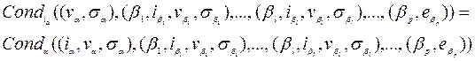

Estrategia de modelación y Simulación Orientada a Procesos
Introducción
La llamada estrategia orientada a procesos (OP) es realmente un proceso combinado de la estrategia orientada a eventos (OE) y la estrategia orientada a eventos con rastreo de actividades (RA). Su característica distintiva es que la descripción de una componente puede ser implementada como una unidad, en vez de estar separada en eventos no conectados o procedimientos de condiciones y actividades. Informalmente hablando, un "proceso" es todo lo que puede ocurrir en una componente activa y sus influencias, incluyendo condiciones y actividades.
La nueva estrategia no es tan "nueva". Las ideas básicas de los descriptores de estado y los tiempos remanentes se mantienen como en la estrategia RA, permitiendo incluso que estos últimos sean menores o iguales a cero cuando una componente está lista internamente para activarse pero depende de otras componentes que influyen sobre él. La idea es sumergir el concepto de las influyentes y las condiciones junto a las actividades dentro de un único "proceso" típico de la componente. La ventaja es que la estructura del programa de simulación mantiene una relación más cercana a la estructura del modelo y por tanto puede "verse" desde el programa. Esto incrementa la verosimilitud de una implementación, así como facilita una puesta a punto más rápida.
En el orden práctico es una buena estrategia a seguir con lenguajes de programación orientados a simulación porque acerca los procedimientos al modelo y esto permite combinarla por ejemplo, con la simulación gráfica.
Concepción general del modelo. Implementación en un programa
Para explicar la estrategia refinaremos la especificación del modelo visto para la RA. En aquel caso, la función de transición:
se caracterizaba esencialmente por dos partes: el predicado o condición Conda y la acción Accióna . Estos dos procedimientos eran lo que en la práctica se implementaban en el programa particular, y el programa general hacía lo que teóricamente haría da .
Ahora, cada una de estas partes Conda y Accióna se dividirán en varias piezas, asociadas a un "subestado" de la componente activa a (lo que antes hemos denominado "status") y que ahora determina el "estado de control" del programa que implementa a da . Las restantes componentes del estado de la componente activa a, van a ser "memorizadas", pero no forman parte esencial de su "status" o estado de control.
1. Para realizar esto, dividimos el valor de ea= Estado(a) en los valores ia= Control(a) y va= Memorias(a), ia será el "status" y se convierte en el "contador de instrucciones" (digamos ia Î {0,1,2,...,m}, como era st Usu i o st Ope ) y va representará las otras variables que hay que memorizar y que terminan de caracterizar ea (digamos por ejemplo, v Usu i = {ted i, t proc i } en el ejemplo de usuarios-computadora, el Operador no tiene variables de memoria). Las componentes pasivas pueden tener definido su estado como en las estrategias anteriores (digamos por ejemplo la cola)
2. De manera general, si el control ia tiene m+1 valores posibles: 0,1,2,...,m, las funciones Conda y Accióna se van a implementar en un único proceso que tiene m+1 "instrucciones", una para cada valor de ia. Teóricamente:

Similarmente:
3. Estos 2 * (m+1) procedimientos para la componente activa a, se unen en un "único" proceso, que típicamente tendría la forma siguiente, en un leguaje de programación general:
procedure Procesoa (var i:: Integer)
begin
Cambios:=False;
Case i of
0: If Cond0,a then Accion0,a {incluyendo Cambios:=True}
1: If Cond1,a then Accion1,a {idem}
2: If Cond2,a then Accion2,a {idem}
m: If Condm,a then Accionm,a {incluyendo Cambios:=True}
end
o en un lenguaje específico orientado a simulación, 0,1,2,...,m son realmente los números de instrucciones o de ciertos bloques de instrucciones. Así, si a es una componente activa Procesoa representará el proceso asociado a esta componente el cual estará dividido en m+1 bloques, uno para cada valor de Controla y cada uno formulado como un If en que intervienen Cond(a) y Acción(a) para el valor específico de Control(a).
En principio, la ejecución de un proceso asociado a una componente a, puede comenzar en cualquiera de los m+1 puntos de activación de Proceso(a). En un lenguaje de programación general, el punto donde se quiere activar se puede pasar como un parámetro: ia (ia = 0, 1, 2, ..., m) que analiza un case. En un lenguaje específicamente orientado a simulación se puede lograr esto con un puntero hacia una instrucción o bloque del proceso y una vez que se ejecutan todas las instrucciones del bloque encabezado por ia dicho puntero apuntará al inicio del bloque siguiente si no se realiza ningún salto o al comienzo de otro bloque especificado dentro del bloque actual.
4. Como cuestión general, consideremos que el simulador mantendrá una ListaDeActivacionesFuturas, cuyos elementos será triplos de la forma (Procesoa, ia , ta ) que indica que el proceso Procesoa se ejecutará a partir de la instrucción ia en el tiempo ta. En todos los elementos de esta lista ta>Reloj. Estos triplos se ordenan en la lista de acuerdo con el campo ta. Esta lista es el análogo funcional de la ListaDeEventos en la estrategia OE.
Existirá también una ListaDeActivacionesActuales, con triplos de la misma forma (Procesoa, ia , ta ) que representan los procesos que deben ser activados en el tiempo actual, o aquellos que ya debían ser activados pero para los cuales no se cumplieron las condiciones de activación (ta<=Reloj, esto es, sa<=0). Estos triplos se insertan de forma ordenada de acuerdo a las prioridades entre las componentes, especificadas si se quiere por una ListaDePrioridades como en la estrategia RA. Pero de hecho, la ListaDeActivacionesActuales es la que es funcionalmente equivalente a la ListaDePrioridades de la estrategia RA con la diferencia de que no contendrá actividades futuras y se actualiza constantemente por el programa. El programa general de hecho debe ocuparse de modificar la ListaDeActivacionesFuturas y la ListaDeActivacionesActuales, incluyendo el movimiento de un triplo de una a otra lista.
5. Para especificar el algoritmo utilizaremos de nuevo un puntero P que recorrerá la ListaDeActivaciones Actuales, supuestamente ya ordenada como se especificó antes. He aquí el Programa general (n es como siempre el número total de componentes y a el número de componentes activas)
Program
Begin
{Inicialización}
Reloj:=TiempoInicio
For i=1,2,...,a
begin
ia i = ia i 0
va i = va i 0
sa i = sa i0
If sa i > 0 Insertar (Procesoa i , ia i , TiempoInicio + sa i) en ListaDeActivacionesFuturas
If sa i <= 0 Insertar (Procesoa i , ia i , TiempoInicio + sa i) en ListaDeActivacionesActuales
{Se supone que todos los procesos que insertan, también ordenan}
end {For}
For i=a+1,...,n do ea i = ea i 0
{Fase de Rastreo}
While Reloj <= TiempoFin do
begin
PosibleMoverP:=True
P:=Inicio de ListaDeActivacionesActuales
While PosibleMoverP do
begin
if P apunta a (Procesoa , ia , ta ), then
begin
Procesoa ( ia )
If Cambios then
begin
Eliminar (Procesoa , ia , ta ) de ListaDeActivacionesActuales
Para toda b Î Influencias(a)È CompActivas
begin
Eliminar (Procesob , ib , tb ) de la Lista en que se encuentre
tb = Reloj + sb
if tb <= Reloj Insertar (Procesob , ib , tb ) en ListaDeActiv...Actuales
if tb > Reloj Insertar (Procesob , ib , tb ) en ListaDeActiv...Futuras
end {Para toda b}
if ListaDeActividadesActuales¹{} MoverP al inicio de esa Lista
end {If Cambios then}
else if P¹ Fin de ListaDeActividadesActuales then Mover P en esa Lista
else PosibleMoverP=False
end {If P apunta}
end {While PosibleMoverP}
Reloj:= tn donde (Proceson , in , tn ) es el primer elemento de ListaDeActi...Futuras
Eliminar los triplos (Procesod , id , td ) de la ListaDeActi...Futuras que td = Reloj e
Insertarlos en ListaDeActividadesActuales
end {While Reloj}
End {Program}
El programa general es más complicado pero los procedimientos específicos (procesos) son más claros y eficientes.
Ejemplo particular en el modelo usuarios-computadora
Recuérdese que aquí teníamos
CompActivas = { Usu1 , Usu2 , ..., Usu99 , Ope }
CompPasivas = { Comp, Cola, Reja, Alm}
Veamos el proceso para Usui
La variable de control para esta componente será sti con valores posibles

Influencias(Usui) = {(Usui, eUsu i,sUsu i ), (Cola, eCola ), (Comp, eComp ), (Alm, eAlm)}
Influyentes(Usui) = {(Usui, eUsu i,sUsu i ), (Cola, eCola ), (Reja, eReja ) }
Las inluyentes sólo hacen falta para recordar las variables que pueden intervenir en CondUsu i
Procedure ProcesoUsu i (var st: Integer)
Begin
Cambios:=False
Case st of
O: begin
Cambios:=True
sti :=1
sUsu i := 0
Cola:=Append[Cola,Usui]
end
1: if First[Cola]=Usui then
begin
Cambios:=True
sti :=2
sUsu i := tproc i
eComp := 1
end
2: begin
Cambios:=True
sti :=3
sUsu i := 0
Cola:=Delete[Cola,Usui]
eComp:=0
eAlm:=Append[eAlm, Usui]
end
3: if Reja = abierta then
begin
Cambios:=True
sti :=4
sUsu i := ted i
eAlm:=Delete[eAlm, Usui]
end
Veamos el proceso para el Operador. Recuérdese que aquí eOpe= stOpe y este valor es 0 si el Operador está libre o 1 si el operador está desocupado
Influencias(Ope) = { (Ope, stOpe , sOpe) , ( Reja, eReja) }
Influyentes(Ope) = { (Ope, stOpe , sOpe) , ( Alm, eAlm) }
Recuérdese que las influyentes sirven aquí solo para recordar que componentes pueden estar en CondOpe
Procedure ProcesoOpe (var st: Integer)
Begin
Case st of
O: begin
Cambios:=True
stOpe:=1
sOpe:=0
eReja :="abierta"
end
1: if eAlm= {} then
begin
Cambios:=True
stOpe=0
sOpe:=480
eReja:="cerrada"
end
End
Observe que de acuerdo a la forma de avance de P a través de la ListaDeActivacionesActuales, según la prioridad, digamos Usu1, Usu2, ..., Usu99, Ope, todas las acciones posibles de un mismo usuario y del operador que puedan activarse se hacen sin avanzar efectivamente el reloj, en particular esto ocurre si un usuario pasa directamente a la primera posición de la cola o el proceso de vaciado del Almacén donde se produce un avance 0 del Reloj.
Comparación de las estrategias de modelación y simulación basadas en eventos
Denotamos las estrategias abreviadamente OE, RA, y OP. La comparación desde el punto de vista del modelo.
1. Tipo de componentes: las tres soportan componentes activas y pasivas
2. Especificación del estado de las componentes activas a:
¨ En OE y RA se describen normalmente por ea
¨ En OP se describen por (ia , va)
3. Influencias e Influyentes
¨ Influencias: Pueden ser activas o pasivas en las tres estrategias.
¨ Influyentes: En OE no hay influyentes, o más bien son solo activas. En RA y OP pueden ser activas o pasivas pero en OP solo se utilizan para recordar que componentes pueden entrar en la Conda
4. Dinámica del sistema
La dinámica del sistema en las tres actividades se determina por la combinación de la dinámica de todas sus componentes. Pero la dinámica de una componente se ve distinta en cada estrategia:
¨ OE: los eventos que pueden ocurrir para una componente activa
¨ RA: las actividades en las que toma parte una componente activa
¨ OP: el movimiento de una componente activa "dentro" de su proceso
5. Procedimientos que implementan la dinámica (a programar)
¨ OE: procedimientos asociados a los eventos de cada componente activa
¨ RA: procedimientos de condición y actividad de cada componente activa
¨ OP: procesos que resumen condiciones y acciones por bloques
6. Cantidad de procedimientos por cada componente activa
¨ OE: igual a la cantidad de eventos en los que la componente participa
¨ RA: uno de condición y uno de actividad
¨ OP: una cantidad de pares condición-acción igual a la cantidad de bloques o posibles valores de control de la componente y resumidos en un único proceso
7. Chequeo de las condiciones para determinar acción
¨ OE: Solo dentro del procedimiento de los eventos
¨ RA: En cada procedimiento de condición para chequear la posibilidad de realizar la actividad
¨ OP: Solo en las condiciones de cada bloque
8. Representación y avance del tiempo
¨ OE: El tiempo del proximo evento para la componente está planificado en la ListaDeEventos. El Reloj avanza al tiempo del primer evento de esta lista previamente ordenada
¨ RA: Cada componente activa tiene un reloj local (que se actualiza cuando la componente cambia de estado ta:=Reloj+sa). El Reloj (global) avanza con saltos estrictamente positivos. Si el valor del reloj local se "queda atrás", esto es si ta<=Reloj una vez que Reloj haya avanzado, esto dice que esa componente está lista internamente para cambiar de estado pero hasta ahora no se han cumplido las condiciones. Si ta>Reloj, no se activa la componente. Para conseguir avances estrictamente positivos, el Reloj avanza al menor tiempo entre los relojes locales que son mayores estrictamente que él.
¨ OP: Es análogo a RA pero el Reloj avanza al menor tiempo en ListaDeActivacionesFuturas.
9. Selección de procedimientos a ejecutar en el tiempo actual.
¨ OE: Si existen eventos simultáneos, el orden se determina por prioridades definidas por una función Selecciona sobre una lista de eventos inminentes. Seleccionar un evento implica seleccionar el procedimiento.
¨ RA: Se rastrean las componentes en orden de prioridades definidas por la ListaDeCondiciones. Se ejecuta el procedimiento asociado a aquella componente cuyo reloj local no sea mayor que el tiempo actual y que cumpla las condiciones.
¨ OP: Los elementos de la ListaDeActivacionesFuturas cuyo tiempo sea igual al valor del Reloj se colocan en la ListaDeActividadesActuales que reordena de acuerdo con una estrategia de prioridad. Si se cumple la condición de activación del bloque actual (el correspondiente a Control(a) ) se ejecutan las acciones de dicho componente
Propiedades de las estrategias para la construcción y utilización de modelos.
Las tres estrategias pueden además ser comparadas desde el punto de vista de su efectividad o de su aplicabilidad (grado de generalidad).
La efectividad depende:
¨ Del esfuerzo y el tiempo requerido para obtener un modelo válido del sistema real
¨ Los recursos computacionales para realizar simulaciones con este modelo
¨ La facilidad con que se puedan realizar cambios futuros en el modelo y en el programa (por ejemplo para manejo de alternativas)
Pero además, sobre la efectividad influyen otros aspectos que no tienen que ver con la estrategia, más bien con el lenguaje (de propósito general u orientado a la simulación), por ejemplo, facilidad de generación de números aleatorios, de recopilación de datos, de preparación de reportes, etc.
|
Ventajas |
Desventajas |
||
|
OE |
Amplia aplicabilidad |
Se requieren habilidades de programación en un lenguaje de propósito general |
|
|
Se facilita el uso de bibliotecas estándar |
Brinda muy pocas facilidades al modelador para especificar la dinámica de los modelos, todo tiene que ser implementado. |
||
|
Buena plataforma para implementar sistemas de propósito general |
|||
|
Permite aplicar metodologías estándar de Ingeniería de Software |
|||
|
En resumen la OE es muy eficiente cuando en problemas concretos las componentes son independientes o cuando se quieren hacer plataformas generales para uso después por programadores en propósitos específicos |
|||
|
RA |
Aplicabilidad destacada cuando hay muchas dependencias entre componentes |
Aplicabilidad más restringida que OE |
|
|
El programa general de la simulación es muy simple |
Requiere todavía de cierta experiencia de análisis para especificar la dinámica |
||
|
Es una buena base para implementar sistemas de simulación de propósito específico |
Puede requerir todavía de cierta experiencia de programación en un lenguaje de propósito general |
||
|
Brinda buen soporte de control para especificar la dinámica del sistema |
|||
|
La estrategia RA es muy eficiente en problemas concretos donde se quiere simplificar una mezcla complicada de interdependencias |
|||
|
OP |
Permite una representación del modelo más cerca de lo real |
Aplicabilidad más dirigida a no profesionales en computación y por tanto sin la flexibilidad de éstos |
|
|
Se facilita la construcción y modificación del modelo |
|||
|
Buena base para implementar en lenguajes de simulación simples |
|||
|
Brinda máximo control de la dinámica del sistema |
|||
|
La estrategia OP es buena cuando se tiene un lenguaje específico y se quieren repuestas rápidas a problemas concretos |
|||
Conclusiones
Tenemos ahora una nueva estrategia de modelación y simulación, aparentemente una mezcla de las dos conocidas anteriormente, pero con la marcada intención de simplificar la definición e implementación de la dinámica de las componentes en procesos únicos y simples y por tanto fáciles de programar en un lenguaje específico y no tan complicado orientado a la simulación.